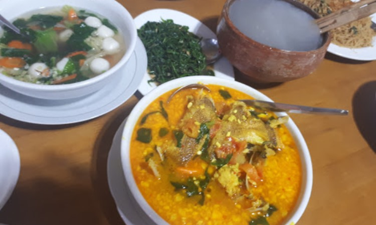

| 
|
Wisata Kuliner
Ratu Gurih Ambon
| Sebagai wilayah Kepulauan Ambon terkenal akan wisata kuliner yang menyajikan berbagai hidangan laut segar, dimana salah satunya dapat ditemukan di Ratu Gurih Ambon. Tempat makan satu ini tidak hanya menyuguhkan berbagai menu hidangan semata, namun Anda bisa memuaskan perut yang sedari tadi berbunyi dengan harga yang cukup bersahabat. Alhasil Anda bisa meneruskan perjalanan dengan hati senang karena sudah menyantap makanan lezatnya.
Menyediakan berbagai menu olahan hasil laut yang diolah dengan aneka rempah pilihan, rasa masakannya pun siap menggoyang lidah. Dimana menu ikan Goropa Bakar adalah menu favorit yang banyak dipesan pelanggan. Rasa masakannya semakin menggiurkan ketika disantap bersama sambal colo colo. Colo Colo sendiri merupakan sambal khas dari Ambon dan terkenal akan rasanya yang dapat membakar lidah namun juga membuat siapapun ketagihan dibuatnya. |
|
|